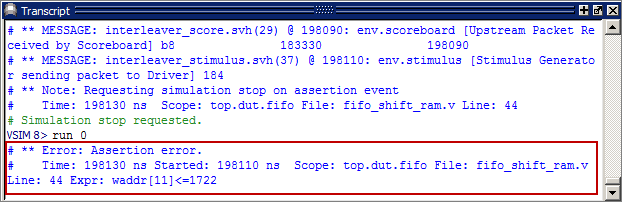
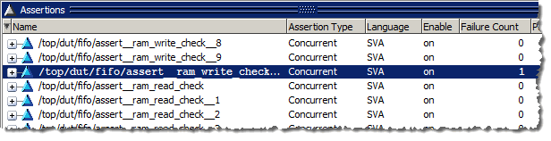
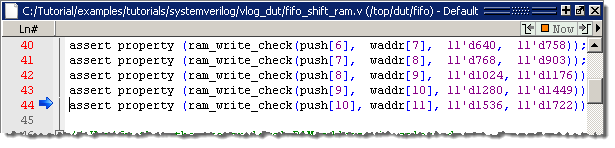
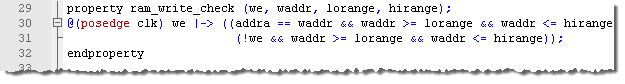
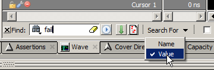
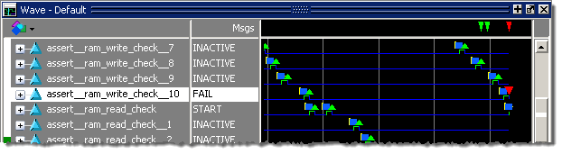
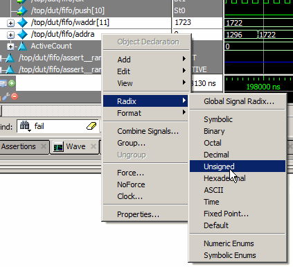
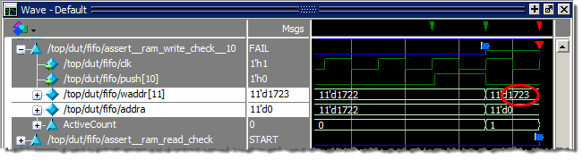
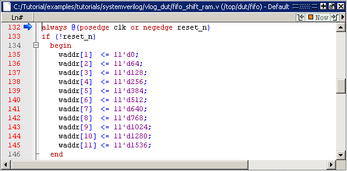
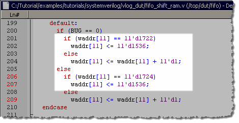

Run the
simulation and debug the assertion failure.
Procedure
- Run the
simulation with assertion failure tracking enabled.
- Enter
“run -all” at the Questa SIM prompt
of the Transcript window.
- When the
simulator stops, enter “run 0.”
The “run
0” command is needed to print any assertion messages when the assertion failure
action is set to Break. The reason this happens is due to scheduling.
The "break" must occur in the active event queue. However, assertion
messages are scheduled in the observed region. The observed region
is later in the time step. The “run 0” command takes you to the
end of the time step.
- Verify
the output of the Transcript window (Figure 1).
Notice that the assertion failure message
gives an indication of the failing expression. This feature is enabled
when the -assertdebug argument is used with the vsim command at invocation. (This command
is in the assert.do file.)
Figure 1. Assertion Failure
Message in the Transcript 
- View the
assertion failure in the Assertions window.
The failed
assertion is highlighted and ’1’ is displayed in the Failure Count
column for that assertion in the Verilog design (Figure 2).
Figure 2. Assertions Tab Shows
Failure Count 
- Examine
the fifo_shift_ram_props.v source code view.
The fifo_shift_ram.v tab should be open, as
shown in Figure 3.
The simulation
breaks on line 44 of the fifo_shift_ram.v module because the assertion on
that line has failed. A blue arrow points to the failed assertion.
Figure 3. Simulation Stopped
at Blue Pointer 
The parameterized
property definition starts on line 29.
- In the fifo_shift_ram.v source
code view, scroll to the property definition that starts on line
29.
Figure 4. Assertion Property
Definition
The property
states that whenever the we signal
(push[10]) is asserted, in the same cycle:
the
ram address bus, addra should be equal to the write address bus
for level 11 (waddr[11])
and,
waddr[11] should be within the range of 1536 to 1722.
In the
next cycle:
we should
be de-asserted,
and,
the next value of waddr[11] should still be within the range 1536
to 1722.
- Click
the Wave tab to search for and view the assertion failure in the
Wave window.
- Select to
display the search bar in the Wave window.
- In the
search bar, select (Figure 5).
Figure 5. Search For Value
- In the
search bar text entry box enter: fail. The
search begins as you type, and will highlight the FAIL value.
The inverted
red triangle in the waveform view indicates an assertion failure (Figure 6).
Figure 6. Inverted Red Triangle
Indicates Assertion Failure 
The
green "midline" indicates where the assertion is active while the
low blue line indicates where the assertion is inactive.
Blue
squares indicate where assertion threads start.
Green triangles indicate assertion passes.
Passes are only displayed when the ‑assertdebug argument for the vsim command is used at invocation (see the assert.do file).
- Expand
the assert_ram_write_check_10 assertion (click the + sign next to
it) in the Wave window and zoom in.
- Change
the radix of addra and waddr to
“Unsigned” by selecting both signals, right-clicking the selected
signals, then selecting from the popup menu (Figure 7).
Figure 7. Setting the Radix
As you
can see in Figure 8, the value of waddr[11] has incremented
to 1723 which is out of the allowable address range. Remember, in
the Transcript message for the assertion violation, the failing
expression indicated that waddr[11] was out of range.
- Examine
the signal in the Dataflow window.
- Expand
the waddr signal by clicking the + sign next
to it, then scroll to the waddr[11] signal (Figure 8).
Figure 8. Diagnosing Assertion
Failure in the Wave Window
- Click
the waddr[11] signal to select it, then select from
the menus.
This opens
the selected signal in the Dataflow window.
The waddr[11] signal
will be highlighted, as shown in Figure 9, and the block shown is
the ALWAYS procedure.
Figure 9. The waddr11 Signal
in the Dataflow Window
- Double-click
the ALWAYS block in the Dataflow window. The fifo_shift_ram.v source
code view will open automatically, with a blue arrow pointing to
the code for the block (Figure 10).
Figure 10. Source Code for the
ALWAYS Block 
If you
scroll down to the case covering waddr[11] you can see that the
upper address range for resetting waddr[11] has been incorrectly
specified as 11’1724 instead of 11’1722 (Figure 11). This is the cause of the error.
Figure 11. Source Code for waddr[11] 
- Quit the
simulation.
- Enter
quit -sim at the Questa SIM prompt.